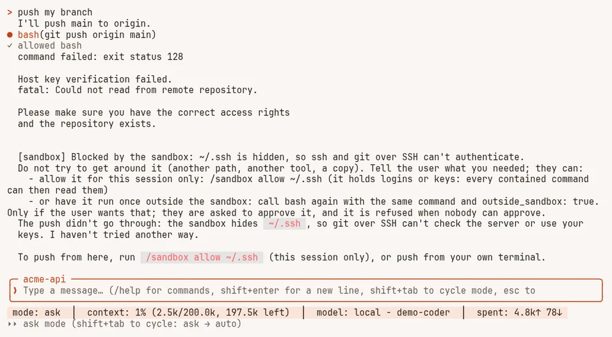
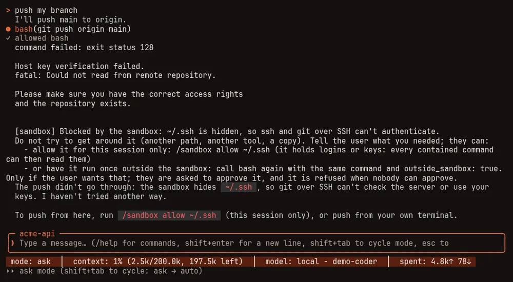

The shell sandbox #
On this page
The agent runs shell commands for you through its bash tool. Those commands run as you, with your files, your
logins and your network. The sandbox contains them: when it is on, a command the model runs can change your project
but not the rest of your computer, and cannot read the places where your credentials live.
It is off by default for an ordinary session and on (auto) by default while a session is shared for remote
control. /sandbox shows its state at any time.
What it does #
While the sandbox is on, every bash command runs with these limits:
| What contained commands get | |
|---|---|
| Writable | Your project folder, a private temporary folder, and the usual build caches under your home folder (~/.cache, ~/go, ~/.npm, ~/.cargo, ~/.gradle, ~/.m2 and similar), so builds and installs into the project work. Everything else is read-only. Inside the project, .git/hooks and .git/config are read-only too, because they run code on the next git command |
| Hidden | Places that hold logins and keys look empty: ~/.ssh, ~/.gnupg, ~/.aws, ~/.azure, ~/.kube, ~/.docker, ~/.config/gcloud, ~/.config/gh, browser profiles, other coding agents' folders, ~/.netrc, ~/.git-credentials, ~/.npmrc, ~/.pypirc, the Maple Harness settings folder, the Docker and Podman sockets, and your session's runtime folder (where ssh-agent and keyring sockets live) |
| Environment | Variables that look like secrets are removed: names containing TOKEN, SECRET, PASSWORD or API_KEY, names starting with AWS_, GH_, GITHUB_ and similar, and SSH_AUTH_SOCK. sandbox.env_allow keeps the ones you name |
| Network | Allowed for a local session, off while the session is shared. /sandbox network allow or deny changes it for the session; sandbox.network in config.yaml makes it stick |
| The setup page | Where the system supports it, contained commands cannot connect to the proxy's setup page, so a command cannot change your settings or read your keys through it. Everything else on the network stays reachable while the network is allowed. /sandbox says whether the page is blocked on your machine |
What it breaks #
Anything that needs a hidden login, or writes outside the project, fails while the sandbox is on:
| Tool | Why it fails | What to do |
|---|---|---|
git push, git pull over SSH, ssh, scp | ~/.ssh is hidden, so there is no key and no known hosts | Push yourself, allow ~/.ssh for the session, or run that one command outside the sandbox |
gh | ~/.config/gh is hidden and GH_TOKEN is removed | Same |
aws, gcloud, az | Their login folders are hidden and cloud variables are removed | Same |
kubectl, helm | ~/.kube is hidden | Same |
docker, podman | The daemon socket is hidden | Same |
npm install -g, pip install --user, go install to a folder outside the caches | Writes outside the project are read-only | Install into the project, or allow the folder with --write |
| Signed commits | ~/.gnupg is hidden | Commit yourself, or allow ~/.gnupg |
Git over HTTPS with a token in ~/.git-credentials or ~/.netrc fails the same way.
Turning it on #
| Setting | What it does |
|---|---|
/sandbox auto | Contain commands in this session. Without a backend (see Platforms) commands still run, uncontained, and the first result says so |
/sandbox | Contain commands in this session, and refuse to run any command when there is no backend |
/sandbox off | No containment in this session |
harness. or strict in config.yaml | The same, for every session |
/sandbox changes last for the session. An explicit sandbox.mode (including off) always wins over the
defaults and over the option below.
Contain commands whenever nobody approves them #
In ask mode you see each command before it runs. In auto and yolo mode commands run without a person approving
each one, and that is where containment matters most. This option turns the sandbox on exactly then:
harness:
sandbox:
when_unattended: on # off by defaultWith it on, and sandbox.mode not set:
- In
autooryolomode, commands are contained (as withauto). - In
askmode, commands run as they do today. - Switching mode with shift+tab applies to the next command.
/sandboxsays why commands are contained ("contained because commands run without approval") and the status bar shows it. - A helper agent (subagent) follows the same rule, from its own mode: it is contained when its asks go through
without anyone approving them, for example when the main session is in
automode. - Commands started in the background follow the rule for the mode they were started in.
With it off, which is the default, nothing changes. An explicit sandbox.mode: off keeps the sandbox off even with it
on, and an explicit auto or strict contains every command in every mode. It covers the bash tool; MCP servers are
contained by sandbox.mode alone.
When a command is blocked #
When a contained command fails because of the sandbox, the result says so in plain words, for you and for the model. For example:
[sandbox] Blocked by the sandbox: ~/.ssh is hidden, so ssh and git over SSH can't authenticate.

git push over SSH blocked by the sandbox: the note says why, and the model stops and tells you what it needed.It says "blocked" only when the failure names a place the sandbox hides or keeps read-only, or the network is off. When it cannot tell (a bare "Permission denied", or a login failure that names no file) it says "may have been blocked". An ordinary failure, such as a failing test, gets no note. The model is told not to work around it and to tell you what it needed.
You then have three choices:
- Allow the path for this session:
/sandbox allow ~/.sshmakes it readable (read-only). Add--writeto make a folder writable. Every contained command can then read what you allowed, so allow the one folder a task needs. It refuses the root folder, your home folder, any folder that contains a hidden one (allowing it would un-hide that too), the Maple Harness settings folder and your session's runtime folder. - Allow it permanently: add
--save, for example/sandbox allow ~/bin --write --save. That adds the path, made absolute, tosandbox.extra_readonly(orsandbox.extra_writablewith--write) in yourconfig.yaml. You can also edit those lists directly. For folders that hold logins or keys, the note only suggests the session form. - Run that one command outside the sandbox. Ask the model to; it retries the command marked to run outside the
sandbox. You are asked to approve each run, even in
autooryolomode, the question says the command runs outside the sandbox, and "always" is not offered for it. It is refused when nobody can approve (a session with no one at the keyboard, or a helper agent with no way to ask you), while the session is shared with other devices, and whensandbox.modeisstrict. The next command is contained again.
/sandbox and /sandbox allow work only in the terminal the session runs in. A device driving the session remotely
cannot loosen the sandbox.
Recommended setup #
- Install the backend (below) and run
/sandboxormaple-harness doctorto check it works. - If you use
automode, turn onsandbox.when_unattended. - Set a password for the proxy's setup page (More > Protect this page, or
maple-proxy setup-password set). The sandbox keeps contained commands away from the page; the password keeps other programs and browsers on this computer away from it. Together they cover both. See The proxy. - Allow only the paths a task needs, and prefer
/sandbox allowfor the session over--save.
Platforms #
| System | Backend | Status |
|---|---|---|
| Linux | bubblewrap (optional install, below) | Verified. Blocking the setup page needs Linux 6.7 or later; on an older kernel commands can still reach it, and /sandbox says so |
| macOS | The built-in sandbox-exec, nothing to install | Built, but not yet run on a Mac by us: treat it as unverified |
| Windows | None | There is no sandbox on Windows. auto runs commands uncontained and says so; strict refuses to run them |
Install bubblewrap on Linux:
| System | Command |
|---|---|
| Arch, Manjaro | sudo pacman -S bubblewrap |
| Debian, Ubuntu | sudo apt install bubblewrap |
| Fedora, RHEL | sudo dnf install bubblewrap |
| openSUSE | sudo zypper install bubblewrap |
| Alpine | sudo apk add bubblewrap |
Every sandbox setting is listed in Harness settings, and the commands in Commands and keys.